홈 › 현관중문 시공사례
7월 3일 정오 화이트 여닫이 현관중문 시공
시공일 2026년 7월 3일
시공형태 화이트 프레임 여닫이 현관중문
지역·아파트 확인되지 않아 미표기
시공형태 화이트 프레임 여닫이 현관중문
지역·아파트 확인되지 않아 미표기
정오 촬영분에서 동일한 화이트 프레임 여닫이 중문이 이어지는 사진군을 하나의 현장으로 분리했습니다.
확인되지 않은 아파트명·평형·유리 사양은 검색 노출을 위해 임의로 만들지 않았습니다.
시공 포인트
현관 구조에 맞춰 실내와 현관을 자연스럽게 구분하는 맞춤 중문 시공사례입니다.
시공 사진
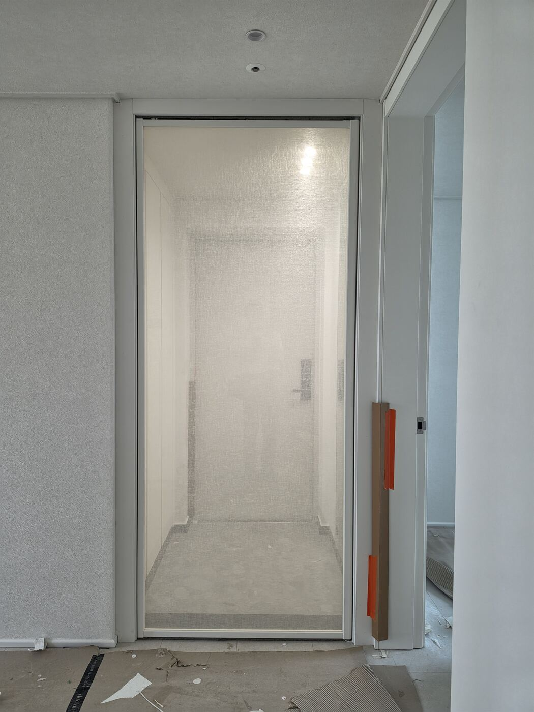
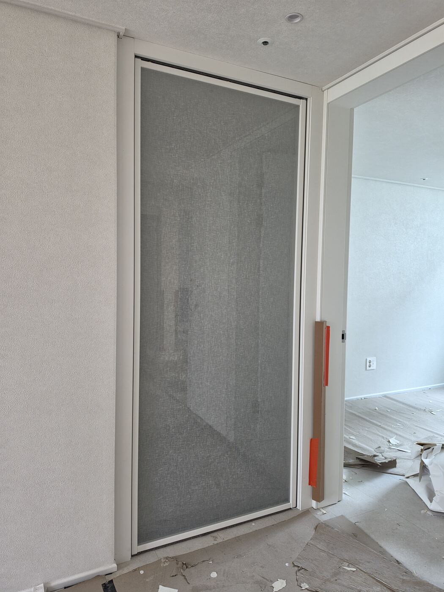
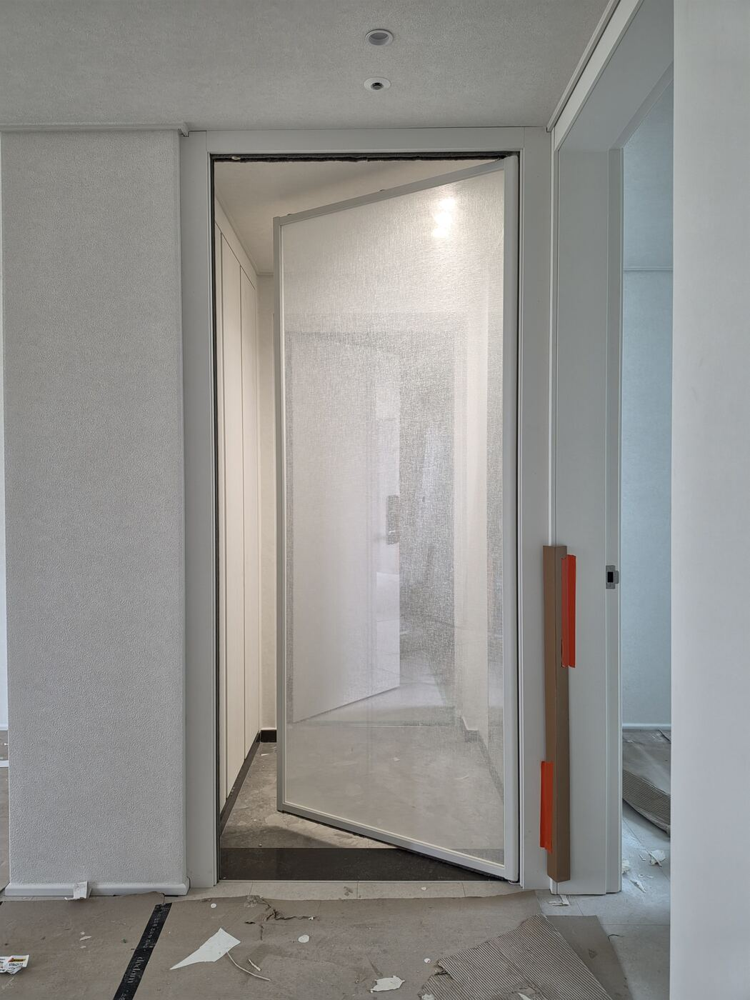
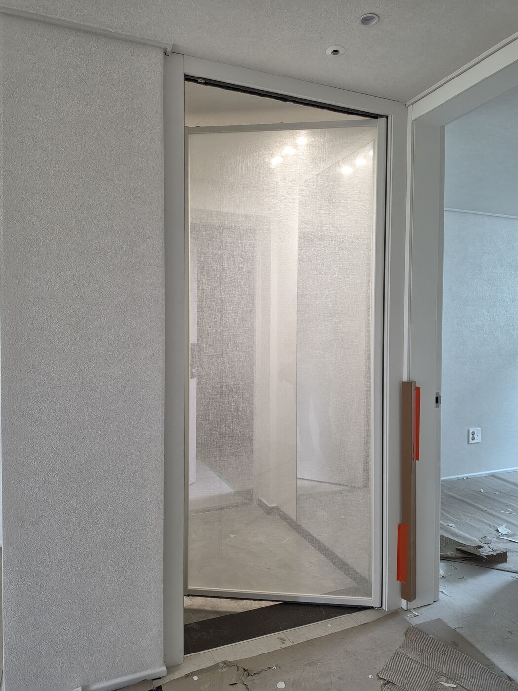

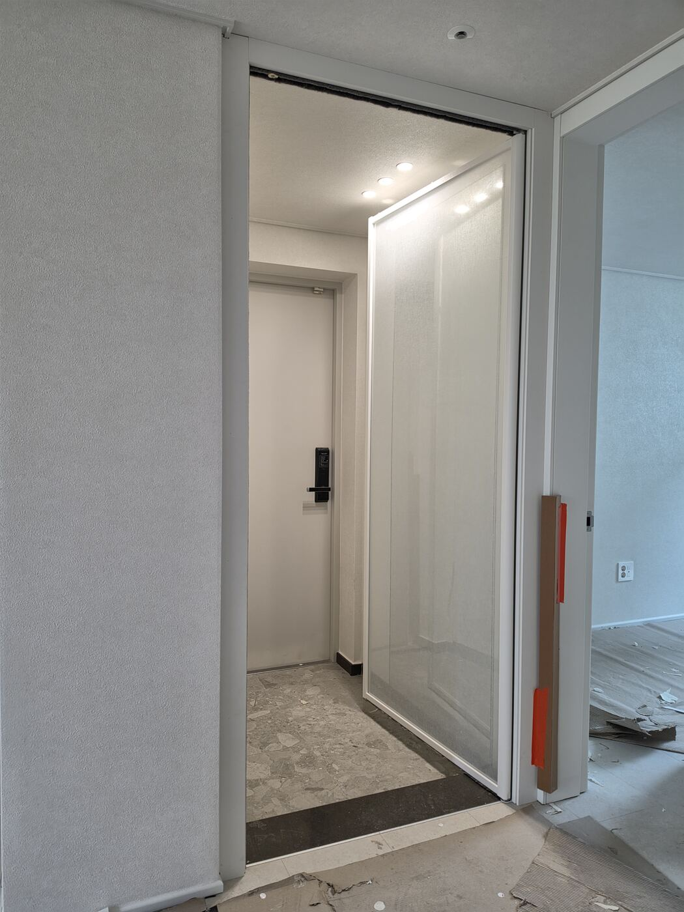
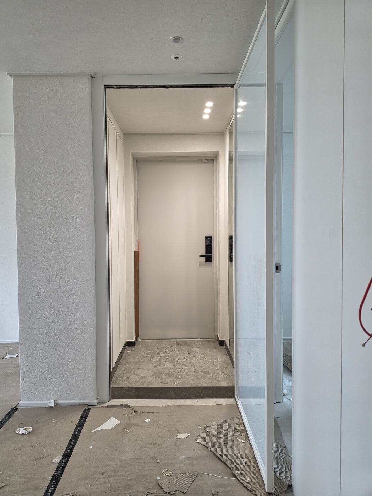
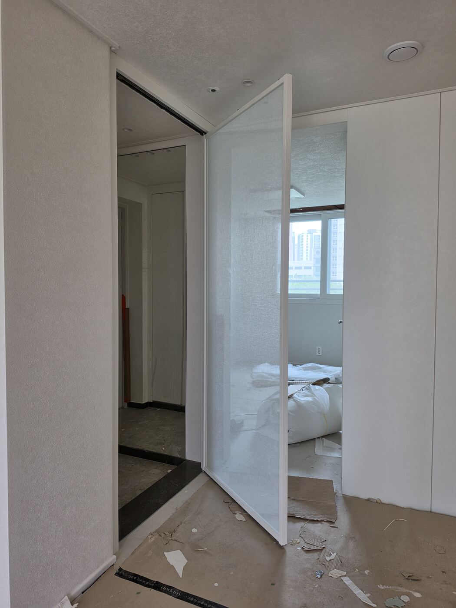
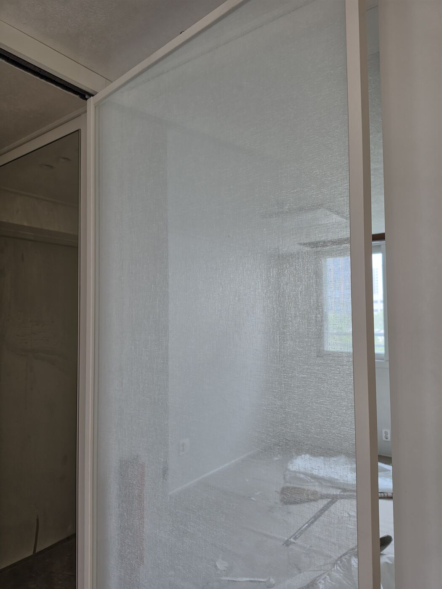
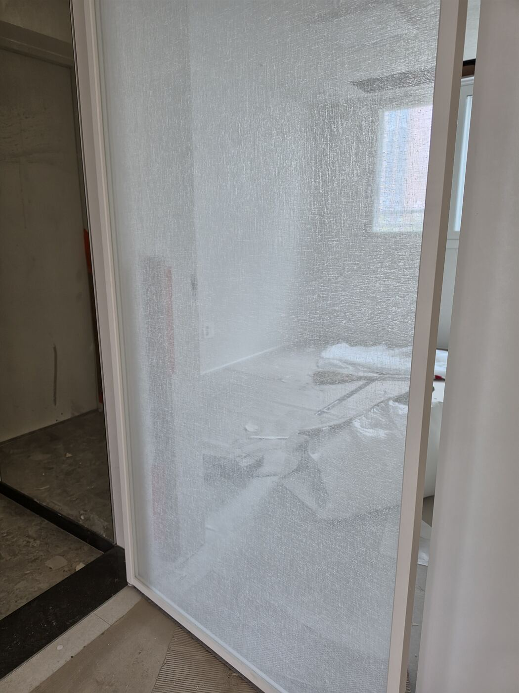
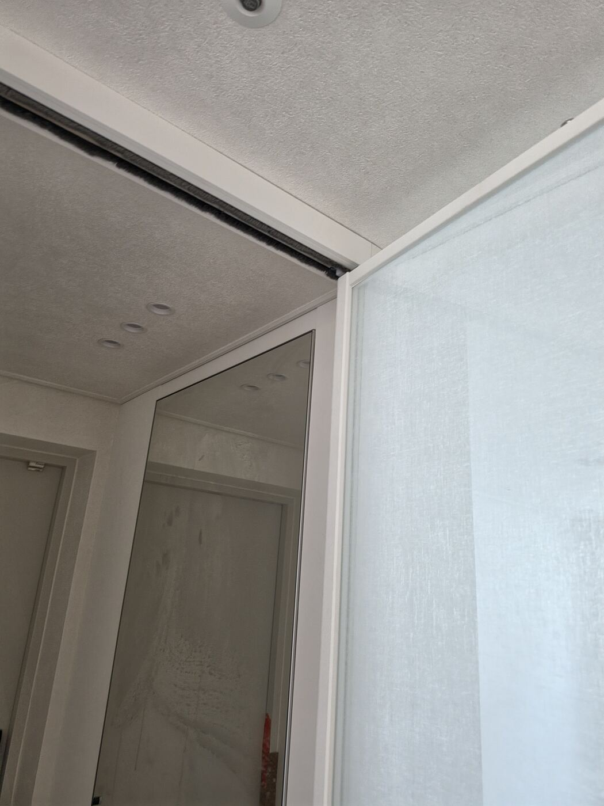
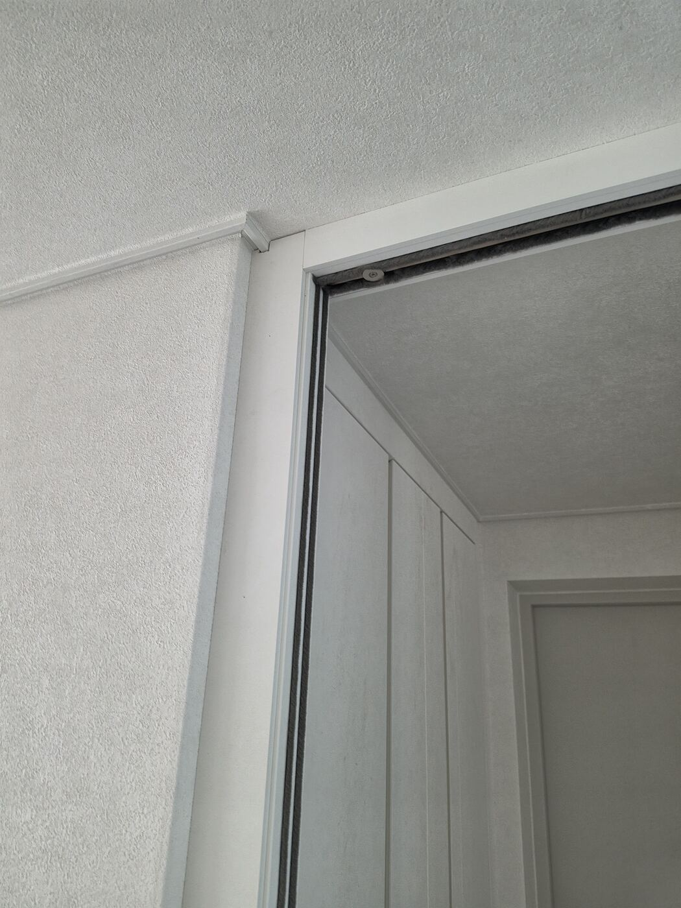
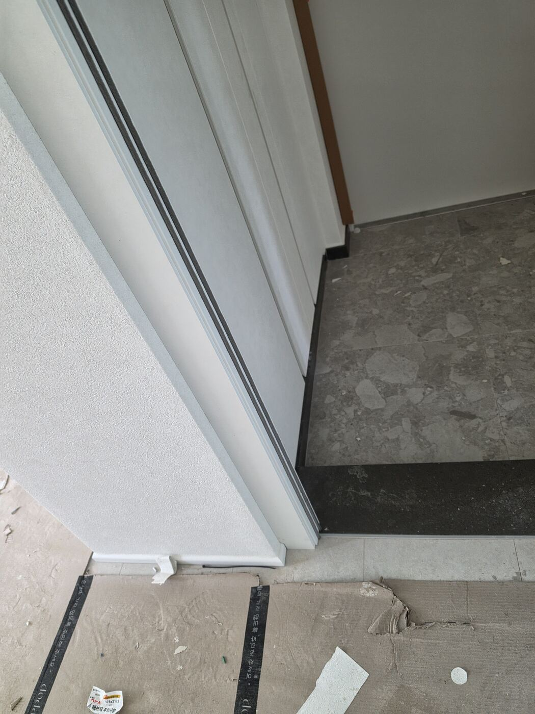
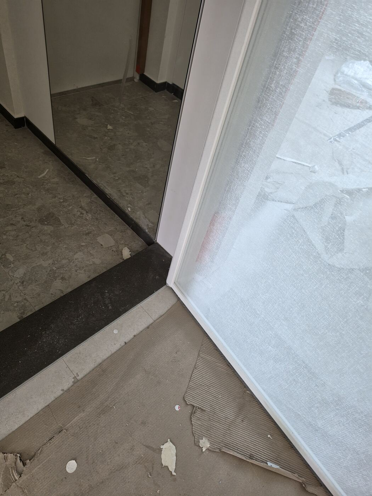